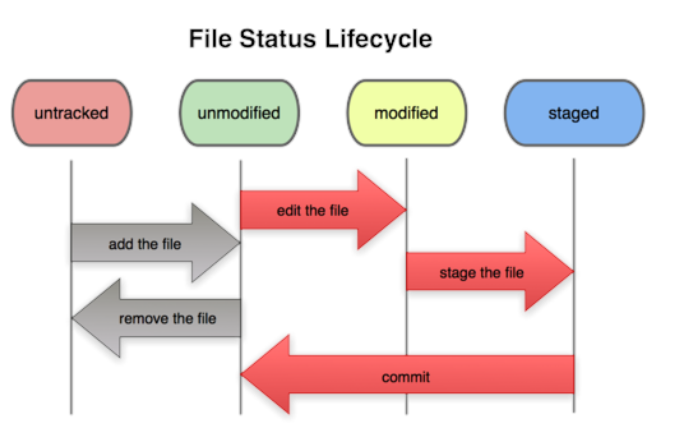
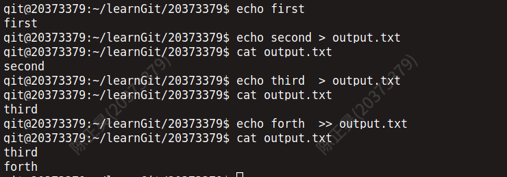
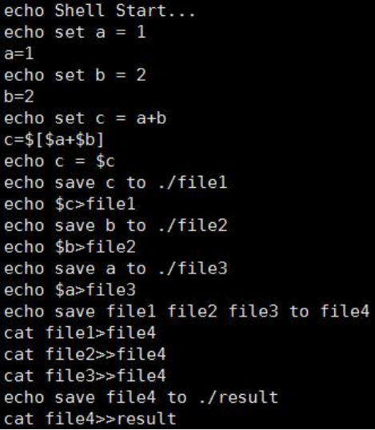
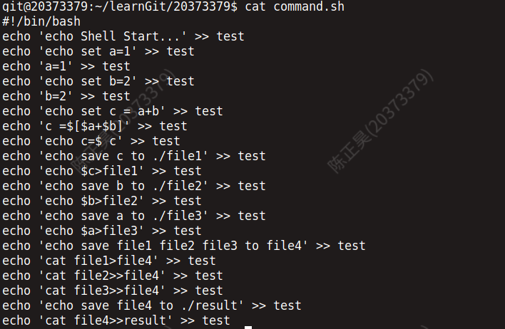
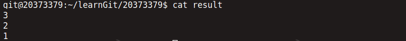

实验思考题
Thinking 0.1
Q： 使用 cat Modified.txt ，观察它和第一次 add 之前的 status 一样吗，思考一下为什么？
A： 这两个status不一样。第一次add之前是的status是Untracked files, 修改README.txt之后的status是Changes not staged for commit，并提示modified: README.txt。
原因是，第一次add之前我们刚刚在工作区新建README.md文件，该文件没有被add过，即在暂存区中没有README.txt,所以显示该文件没有被追踪（untracked）。而修改README.txt后，这时候在工作区和暂存区都存在file，即该文件已被追踪到，因此会显示该文件已被修改（mofified）而不是untracked。
Thinking 0.2
Q： 思考一下箭头中的 add the file 、 stage the file 和commit 分别对应的是 Git 里的哪些命令呢？

A：
add the file 对应得是git add和git commit, 表示新建的文件被加入暂存区，并加入到本地版本库。 staged the file对应的也是git add，表示的是把在版本库中有备份的，且已被修改的文件加入暂存区。commit对应的是git commit表示的是将暂存区中的文件加入本地版本库。
Thinking 0.3
Q1： 困意一阵阵袭来，小明睡倒在了键盘上。等到小明早上醒来的时候，他惊恐地发现，他把一个重要的代码文件 printf.c删除掉了。你该怎样帮他把代码文件恢复呢？
A1： 此时小明没有把修改add到暂存区，只需要使用git checkout -- printf.c即可恢复。
Q2： 小红很爽快地在键盘上敲下了 git rm printf.c，这下事情更复杂了，现在你又该如何处理才能弥补小红的过错呢？
A2： 此时小红把暂存区中的printf.c也删去了，只需要git reset HEAD printf.c命令即可将文件在暂存区中恢复，然后再git checkout -- printf.c 即可。
Q3： 突然发现小明的仓库里有一个叫 Tucao.txt，你好奇地打开一看，发现是吐槽操作系统实验的，且该文件已经被添加到暂存区了，面对这样的情况，你该如何设置才能使 Tucao.txt在不从工作区删除的情况下不会被 git commit 指令提交到版本库？
A3： 我们只需要使用git rm --cached Tucao.txt命令即可将暂存区里的Tucao.txt中删除。
Thinking 0.4
Q： 对git reset --hard使用的理解？
A： git reset --hard实际上是用来改变当前的仓库状态，使用该指令，我们可以将当前仓库的状态变为以前任一次commit后的状态，即可以实现版本回退。此时我们既可以使用git reset --hard HEAD^也可以使用git reset --hard <Hash-code>。hashcode我们需要通过git log指令获取。
git reset --hard可退也可回。我们只需要记住后面某一次commit时的hashcode，再通过git reset --hard <Hash-code> 即可从未来会到现在
Thinking 0.5
Q： 指出下面的描述哪些正确那些错误——
1. 克隆时所有分支均被克隆，但只有 HEAD 指向的分支被检出。
2. 克隆出的工作区中执行 git log、 git status、 git checkout、 git commit 等操作不会去访问远程版本库。
3. 克隆时只有远程版本库 HEAD 指向的分支被克隆。
4. 克隆后工作区的默认分支处于 master 分支。
A：
1.正确。 我们可以做一个实验。首先我们可以在家目录下新建一个文件夹learnGit，然后进入该文件夹。在该文件夹下使用命令git clone git@git.os.buaa.edu.cn:os2022/20373379.git之后我们可以在看到出现了新文件夹20373379。

之后我们进入该文件夹，使用git branch -a查看当前所有分支——

从中可以发现，本地分支(绿色)只有main被检出。虽然其他分支没有出现，但我们实际上已经将其clone下来了，只需要使用git checkout命令即可将其检出。例如我们使用git checkout lab0，lab0分支即可被检出。
2.正确。 在git中，只有git pull，git push, git remote等命令和远程库有关。

3.错误。 解析同第一问。
4.正确。 我们在第一问的实验中已经发现，当我们刚刚克隆时，HEAD指向的是远程仓库中的默认分支，即main。实际上main和master是一样的意思，只不过是远程仓库默认分支的两种叫法。
Thinking 0.6
Q： 执行如下命令, 并查看结果
- echo first
- echo second > output.txt
- echo third > output.txt
- echo forth >> output.txt
A： 命令执行结果如下（对于重定向的命令，我们使用cat来查看output.txt中的结果）

Thinking 0.7
Q： 使用你知道的方法（包括重定向）创建下图内容的文件（文件命名为test），将创建该文件的命令序列保存在 command 文件中，并将 test 文件作为批处理文件运行，将运行结果输出至 result 文件中。给出 command 文件和 result文件的内容，并对最后的结果进行解释说明（可以从 test 文件的内容入手） . 具体实现的过程中思考下列问题: echo echo Shell Start 与 echo ‘echo Shell Start’ 效果是否有区别; echo echo $c>file1 与 echo ‘echo $c>file1’ 效果是否有区别.

A： command文件中的内容为

result 文件中的内容为

结果分析：我们在test中先将a和b分别赋值为1和2，然后令c等于a与b的和，即c的结果为.我们将c，b，a的值分别写入file1、file2、
file3，此时这三个文件中的值分别为3, 2, 1。然后我们使用cat将这三个文件的值 追加 写入file4，再把file4中的内容写入result。因此result中的值为3, 2, 1。
在实验过程中我们还发现，echo echo Shell Start 与 echo ‘echo Shell Start’ 效果是没有区别的； echo echo $c>file1 与 echo ‘echo $c>file1’ 效果是有区别的，前者会将"echo $c"重定向到file1，而后者会将"echo $c>file"这一字符串在终端中显示。
实验难点图示
我认为该实验的难点主要包含以下难点——git的使用（撤销、版本回退和本地远程同步）、三种文件操作命令的使用（awk、grep、sed）、shell脚本中不同括号的用法。

体会与感想
Lab0主要让我们学习如何使用Linux控制终端来进行文件操作，实验任务难度不大， 我花费的时间约六七个小时左右，其中大部分都是在学习新的命令和新的用法。因为指导书所提供的学习内容比较局限，在一些常用的命令介绍上也仅仅是抛砖引玉（例如awk，sed等），所以许多重要的用法还需要在csdn等网站上查找资料自学。
终端操作和以往在可视化界面上进行的操作不同，一开始面对这些陌生的命令，以及让人迎接不暇的各种参数，我还并不是很适应，甚至有些望而生畏的感觉。但当我多次在shell里使用后，这些命令逐渐变得熟悉，使用起来也更加得心应手。正如荣文戈老师说的那样——“程序员的提高是一种体力活”，诚哉斯言！
If you like this blog or find it useful for you, you are welcome to comment on it. You are also welcome to share this blog, so that more people can participate in it. If the images used in the blog infringe your copyright, please contact the author to delete them. Thank you !